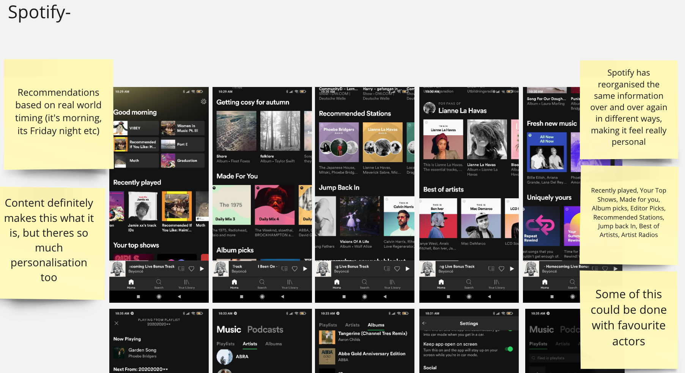

Compeditor analysis
Our research found that RTÉ Player’s competitors went beyond matching services and included those that provided video streaming, current affairs, connecting with friends, live TV, and relaxation after work.
These included: Live TV, BBC player, TG4 player, All4 player, Virgin media player, Netflix, Disney Go, Mubi Now Tv, YouTube.

